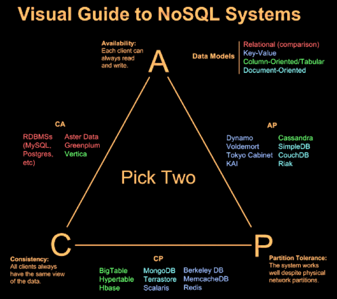
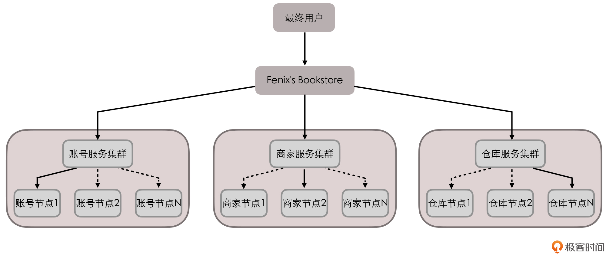

并发相关-CAP¶
Note
CAP是解决FLP定理的问题，提出的一种Trade-off方式解决分布式问题，通过对系统主要设计指标进行一定的妥协，来设计出一个理论上可行的、可以满足实际需求的分布式系统
Note
CAP 理论的作者已经重新解释了很多人对 CAP 的误解，C A P 三者并不是互斥关系只能选其二，而是在出现网络分区时，可以选择 0.9 + 0.9 + 0.7 之类的措施，在三者间进行平衡取舍。
分布式系统理论基础 - CAP¶
CAP由Eric Brewer在2000年PODC会议上提出，是Eric Brewer在Inktomi期间研发搜索引擎、分布式web缓存时得出的关于数据一致性(consistency)、服务可用性(availability)、分区容错性(partition-tolerance)的猜想：
It is impossible for a web service to provide the three following guarantees : Consistency, Availability and Partition-tolerance.
CAP:
数据一致性(consistency)
服务可用性(availability)
分区容错性(partition-tolerance)
数据一致性(consistency):
如果系统对一个写操作返回成功，那么之后的读请求都必须读到这个新数据；
如果返回失败，那么所有读操作都不能读到这个数据
对调用者而言数据具有强一致性(strong consistency)
(又叫原子性 atomic、线性一致性 linearizable consistency)
代表在任何时刻、任何分布式节点中，我们所看到的数据都是没有矛盾的。
服务可用性(availability):
所有读写请求在一定时间内得到响应，可终止、不会一直等待
代表系统不间断地提供服务的能力。
分区容错性(partition-tolerance):
在网络分区的情况下，被分隔的节点仍能正常对外服务
代表分布式环境中，当部分节点因网络原因而彼此失联（即形成 “网络分区”）时，系统仍能正确地提供服务的能力
一致性:
1. 序列一致性(sequential consistency)
不要求时序一致，A操作先于B操作，在B操作后如果所有调用端读操作得到A操作的结果，满足序列一致性
2. 最终一致性(eventual consistency)
放宽对时间的要求，在被调完成操作响应后的某个时间点，被调多个节点的数据最终达成一致
* 顺序一致性（Sequential Consistency）：Leslie Lamport 1979 年经典论文《How to Make a Multiprocessor Computer That Correctly Executes Multiprocess Programs》中提出，是一种比较强的约束，保证所有进程看到的 全局执行顺序（total order）一致，并且每个进程看自身的执行（local order）跟实际发生顺序一致。例如，某进程先执行 A，后执行 B，则实际得到的全局结果中就应该为 A 在 B 前面，而不能反过来。同时所有其它进程在全局上也应该看到这个顺序。顺序一致性实际上限制了各进程内指令的偏序关系，但不在进程间按照物理时间进行全局排序。
https://en.wikipedia.org/wiki/Sequential_consistency
* 线性一致性（Linearizability Consistency）：Maurice P. Herlihy 与 Jeannette M. Wing 在 1990 年经典论文《Linearizability: A Correctness Condition for Concurrent Objects》中共同提出，在顺序一致性前提下加强了进程间的操作排序，形成唯一的全局顺序（系统等价于是顺序执行，所有进程看到的所有操作的序列顺序都一致，并且跟实际发生顺序一致），是很强的原子性保证。但是比较难实现，目前基本上要么依赖于全局的时钟或锁，要么通过一些复杂算法实现，性能往往不高。
https://en.wikipedia.org/wiki/Linearizability

知名分布式系统的主场景设计权衡¶
实例讲解CAP¶
事例场景:
Fenix's Bookstore 是一个在线书店。
一份商品成功售出，需要确保以下三件事情被正确地处理：
1. 账号服务: 用户的账号扣减相应的商品款项；
2. 仓库服务: 商品仓库中扣减库存，将商品标识为待配送状态；
3. 商家服务: 商家的账号增加相应的商品款项。
分布式场景: 每一个服务都有多个节点，每一个服务都有着自己的数据库

Fenix’s Bookstore 的服务拓扑¶
操作:
假设某次交易请求分别由 “账号节点 1”“商家节点 2”“仓库节点 N” 来进行响应
当用户购买一件价值 100 元的商品后:
1. 账号节点 1 首先应该给用户账号扣减 100 元货款
2. 账号节点 1 在自己的数据库扣减 100 元后，还要把这次交易变动告知账号节点 2 到 N
以及确保能正确变更『商家集群』和『仓库集群』其他账号节点中的关联数据
此时，我们可能会面临以下几种情况:
1. 一致性问题:
如果该变动信息没有及时同步给其他账号节点，
那么当用户购买其他商品时，会被分配给另一个节点处理，
因为没有及时同步，此时系统会看到用户账户上有不正确的余额，从而错误地发生了原本无法进行的交易。
2. 可用性问题:
要把该变动信息同步给其他账号节点，就必须暂停对该用户的交易服务，直到数据同步一致后再重新恢复
那么当用户在下一次购买商品时，可能会因为系统暂时无法提供服务而被拒绝交易。
3. 分区容忍性问题:
如果由于账号服务集群中某一部分节点，因出现网络问题，无法正常与另一部分节点交换账号变动信息
那么此时的服务集群中，无论哪一部分节点对外提供的服务，都可能是不正确的
我们需要考虑能否接受由于部分节点之间的连接中断，而影响整个集群的正确性的情况。
Note
以上还只是涉及到了账号服务集群自身的 CAP 问题，而对于整个 Bookstore 站点来说，它更是面临着来自于账号、商家和仓库服务集群带来的 CAP 问题。
整个 Bookstore 站点面临的CAP问题:
1. 用户账号扣款后，由于没有及时通知仓库服务
导致另一次交易中看到仓库中有不正确的库存数据而发生了超售
一致性问题
2. 因仓库中某商品的交易正进行中，为同步用户、商家和仓库此时的交易变动
而暂时锁定该商品的交易服务
可用性问题
CAP的取舍¶
说明:
1. 在某时刻如果满足AP，分隔的节点同时对外服务但不能相互通信，将导致状态不一致，即不能满足C
2. 如果满足CP，网络分区的情况下为达成C，请求只能一直等待，即不满足A
3. 如果要满足CA，在一定时间内要达到节点状态一致，要求不能出现网络分区，则不能满足P
CAP定理能够将这些一致性算法的集合进行归类:
C+A: CA without P
以2阶段提交(2 phase commit)为代表的严格选举协议。
当通信中断时算法不具有终止性（即不具备分区容忍性）;
C+P: 以Paxos、Raft为代表的多数派选举算法。
当不可用的执行过程超过半数时，算法无法得到正确结果(即会出现不可用的情况);
A+P: 以Gossip协议为代表的冲突解决协议。
当网络分区存在和执行过程正确时，只能等待分区消失才保持一致性（即不具备强一致性）
CA without P:
假设节点之间的通讯永远是可靠的
可是永远可靠的通讯在分布式系统中必定是不成立的，这不是你想不想的问题，而是网络分区现象始终会存在
所以『CA without P』处理的是非分布式问题，如: 传统的单机数据库
实例:
主流的 RDBMS（关系数据库管理系统）集群通常就是采用放弃分区容错性的工作模式。
以 Oracle 的 RAC 集群为例:
它的每一个节点都有自己的 SGA（系统全局区）、重做日志、回滚日志等，
但各个节点是共享磁盘中的同一份数据文件和控制文件的，
也就是说，RAC 集群是通过共享磁盘的方式来避免网络分区的出现。
CP without A:
假设一旦发生分区，节点之间的信息同步时间可以无限制地延长
相当于退化到全局事务的场景，即一个系统可以使用多个数据源
可以通过 2PC/3PC 等手段，同时获得分区容错性和一致性。
实例:
1. DTP 模型的分布式数据库事务
2. 著名的 HBase 也是属于 CP 系统
假如某个 RegionServer 宕机了，这个 RegionServer 持有的所有键值范围都将离线
直到数据恢复过程完成为止，这个时间通常会是很长的
AP without C:
假设一旦发生分区，节点之间所提供的数据可能不一致
AP 系统目前是分布式系统设计的主流选择
实例:
大多数的 NoSQL 库和支持分布式的缓存都是 AP 系统
以 Redis 集群为例:
如果某个 Redis 节点出现网络分区，那也不妨碍每个节点仍然会以自己本地的数据对外提供服务。
但这时有可能出现这种情况，即请求分配到不同节点时，返回给客户端的是不同的数据
原因:
P 是分布式网络的天然属性，你不想要也无法丢弃
A 通常是建设分布式的目的
Note
基于CAP定理，我们需要根据不同场景的不同业务要求来进行算法上的权衡。对于分布式存储系统来说，网络连接故障是无法避免的。在设计分布系统时不得不考虑分区容忍性，所以我们实际上只能在一致性和可用性之间进行权衡。
Note
特别值得一提的经典设计范例是阿里巴巴的OceanBase系统。它将数据分为了冷数据和热数据两个不同的场景。对于冷数据，规定只读不写。这样就不需要处理分布式写操作带来的一致性问题，只需保证可用性和分区容忍性即可（即AP场景）。而对于新增的热数据，由于用户需要频繁访问，所以采取不同的服务器分片进行服务，本地读写的模式，不需要考虑网络分区的问题（即CA场景）。通过对CAP定理的深刻理解和灵活运用，构建出了满足高并发读写、处理海量金融数据的分布式数据库。
PACELC¶
CAP理论的修改版本
例如延时(latency)，它是衡量系统可用性、与用户体验直接相关的一项重要指标。CAP理论中的可用性要求操作能终止、不无休止地进行，除此之外，我们还关心到底需要多长时间能结束操作，这就是延时，它值得我们设计、实现分布式系统时单列出来考虑。
延时与数据一致性也是一对“冤家”，如果要达到强一致性、多个副本数据一致，必然增加延时。加上延时的考量，我们得到一个CAP理论的修改版本PACELC：如果出现P(网络分区)，如何在A(服务可用性)、C(数据一致性)之间选择；否则，如何在L(延时)、C(数据一致性)之间选择
参考¶
数据一致性、服务可用性、分区容错性: https://app.yinxiang.com/fx/12b8f4c1-b55e-4368-a1c3-cc57265df5b1
【极客时间】分布式事务: https://time.geekbang.org/column/article/322287
分布式系统 CAP 理论深入探索和分析: https://blog.csdn.net/u014645192/article/details/90695205
【维基】CAP定理: https://en.wikipedia.org/wiki/CAP_theorem